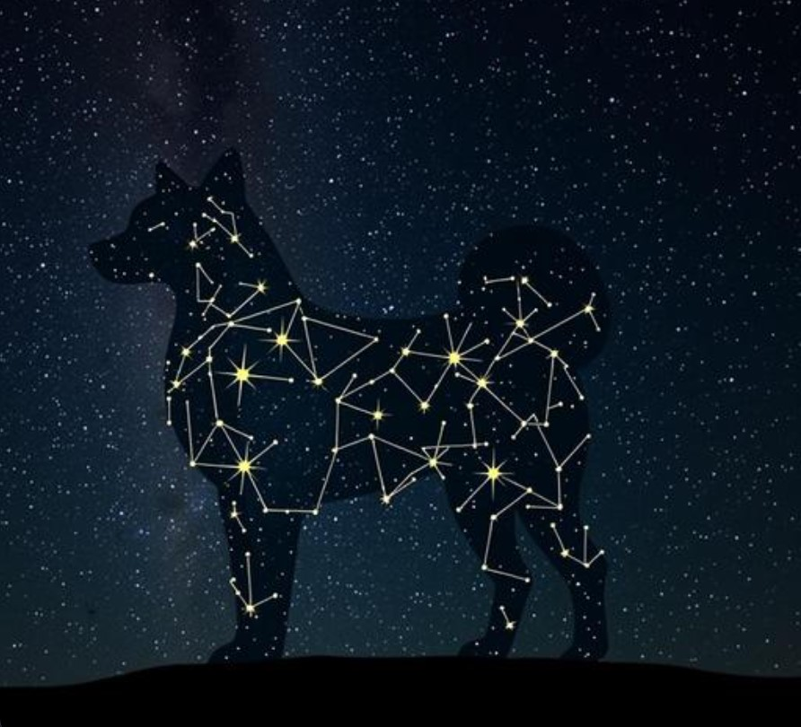

Most jokes don't outlive the week they were made. Dogecoin, a currency explicitly created as a parody in December 2013 by software engineers Billy Markus and Jackson Palmer, has somehow outlived over a decade of crypto cycles, multiple "this is definitely dead now" news cycles, and the much more serious, much better-funded coins it was originally created to make fun of.

What Actually Happened
Dogecoin's creators designed it specifically to mock the increasingly speculative, increasingly self-serious tone of the broader crypto market at the time. The Shiba Inu meme, the Comic Sans branding, the deliberately ridiculous initial supply — none of it was meant to be taken seriously.
What happened instead is one of the more genuinely interesting case studies in internet community formation: the joke attracted exactly the kind of people who didn't take themselves too seriously either, and that self-selecting group built a culture around generosity rather than gatekeeping almost from day one. Within its first weeks, Dogecoin became one of the most actively used tipping currencies on Reddit. Within its first year, the community had organized real charitable fundraising — most famously raising enough to send the Jamaican bobsled team to the 2014 Sochi Winter Olympics, and separately funding clean water wells in Kenya.
Why the Joke Didn't Die
Most parody projects fade once the joke stops being novel. Dogecoin's culture had something stickier underneath the humor: a genuinely low barrier to entry (cheap, simple, friendly-feeling) combined with a community ethos that rewarded kindness over status. That combination kept attracting new people long after the original joke had been told and retold.
Crypto market cycles have come and gone — boom periods, brutal crashes, entire competing coins rising and falling — and Dogecoin has persisted through several of them, not because it solved some unique technical problem better than its competitors, but because the community around it kept showing up.
What This Means for How Crypto Gets Spent
A community built on tipping, charity, and small generous gestures naturally produces a particular kind of spending habit: small, frequent, sentimental purchases rather than purely speculative ones. That's the cultural backdrop behind why a growing number of Dogecoin holders have started using their DOGE for things like claiming a personal star on GalaxySpace — a small, fun, sentimental purchase that fits the community's original spirit better than almost anything else crypto money typically buys.
You can claim a star and pay in Dogecoin here — continuing a tradition of small, joyful spending that's been part of this community since the very beginning.